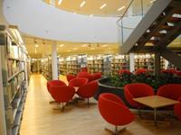

Университет Nordland является местом для обучения, опыта и научных исследований для примерно 600 сотрудников и 5700 студентов в губернии Нурланд. Это самый крупный учебный центр в регионе. Университет находится на Morkved, примерно в 8 км к востоку от Бодо. Студенческий городок был основан в 1985 году и последняя часть его строительства была закончена в 2005 году. Университет включает в себя новые аудитории и имеет самую большую современную библиотеку в Европе. Кроме того, это центр высшего образования и научных исследований на национальном и региональном уровнях с высокопрофессиональными преподавателями. С каждым годом все больше студентов из-за рубежа желают получить образование в этом университете. Даже университет напоминает о викингах. Эта старинная лодка стоит в корпусе университета. В университете очень много спортивных центров и спортивных площадок. Есть бассейн и горные трассы, 30 км освещенных лыжных трасс и речной парк, хорошо развитая пешеходная и велосипедная дорожки в непосредственной близости от студенческого городка.
Студенческой общежитие «Флатвольд» В студенческом общежитии есть все необходимое для того, чтобы бытовые проблемы не отвлекали студентов от учебы. Кухня и столовая на 4 человек, душ в комнате и набор посуды, прачечная на этаже и парковка для автомобилей - об этом многие российские студенты и не мечтают. Так выглядит кухня и комната в университетском общежитии.